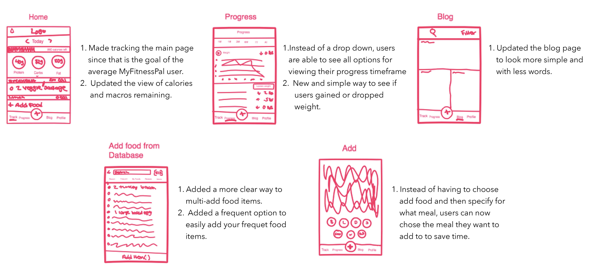
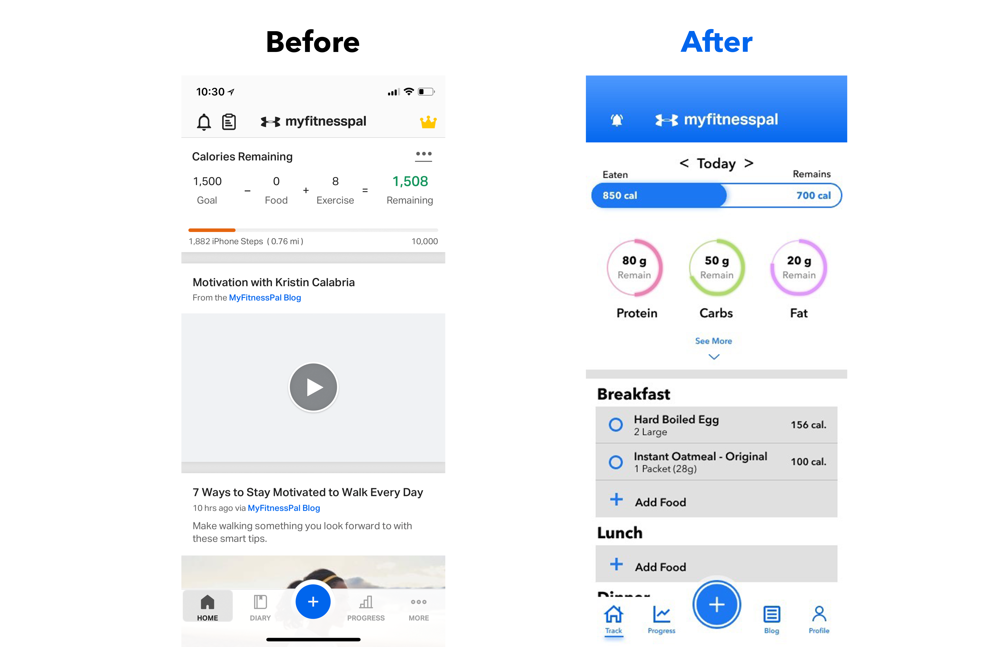
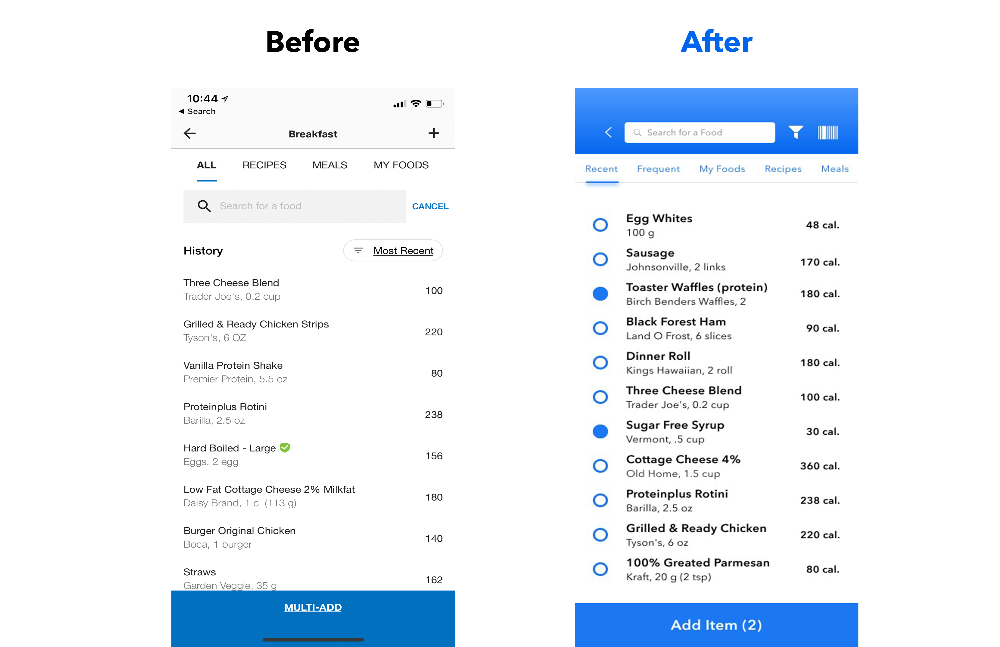
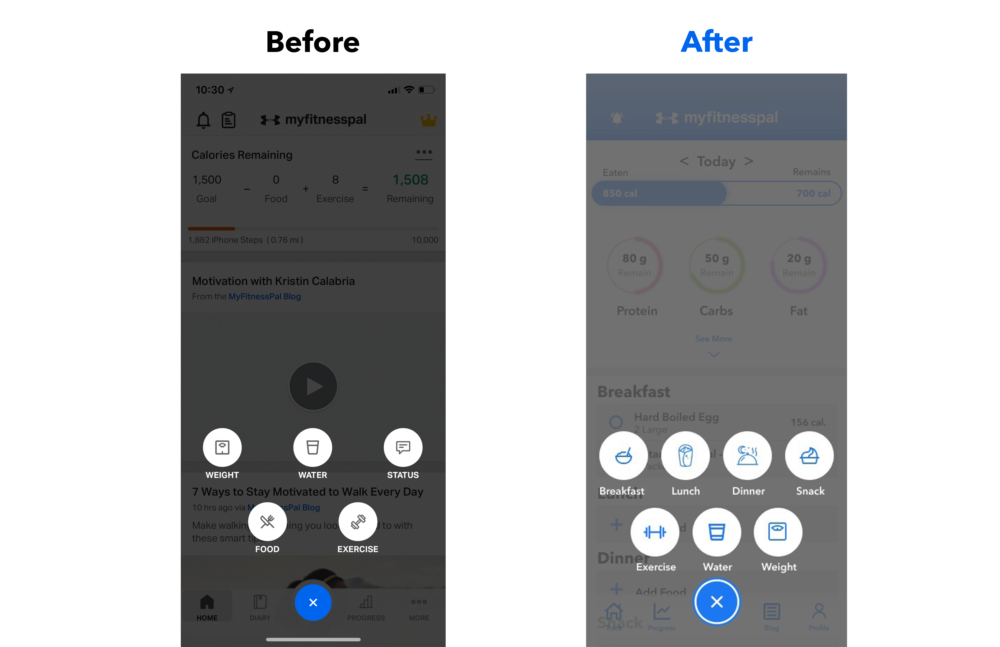
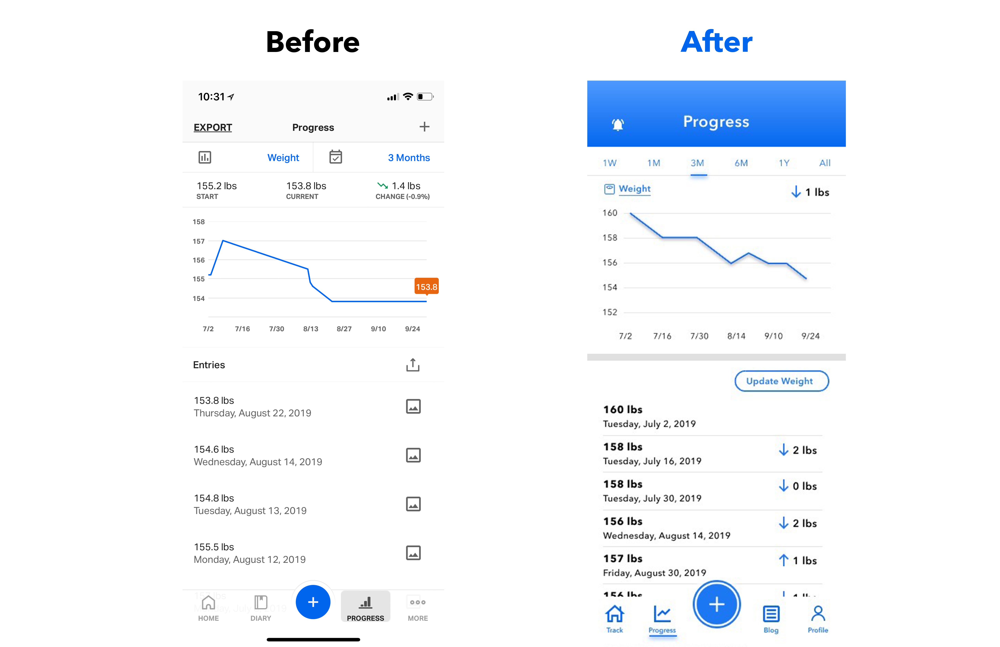

Design
Design Proccess
- The first step of the design process involved user interviews and desk research to understand how competitors and users behave. I believe it’s important to get this information early on in the process, before having an idea or prototyping.
- After analyzing these insights, I began to conceptualize the solution, focusing on user flows and wireframe to give me a way to iterate faster through ideas. From this, I went to the production mode, designing the interface considering design principles such as contrast, hierarchy and feedback, brand attributes, user interactions, and the imagistic universe presented as briefing by the case.
- Once the interface was ready, I took feedback from two other fellow designers in order to understand the experience gaps. Validation, although part of my usual design process, would be a post-conceptualization and interface step and won’t be discussed in depth in this case.
Ideate
Now that I identified the major pain points, I sketched several potential solutions and conducted comprehension tests with friends who fit the user testing demographic. I incorporated their feedback before creating my hi-fidelity mockups.

Prototype and Validate
After creating my sketches and testing their usability, I jumped into prototyping my final design solution.
1. Home Page
I came up with a new home screen layout aimed to arrange the key features that were highlighted by users. Beyond pulling the nutrition tracking tab out into the open as the main page, the home tab now provides the user with a full view of their daily caloric and macronutrient goals.
I also proceeded to modify the app’s navigation bar, as the primary function of the home screen itself had now changed. The blog section then needed to be moved to a different tab as well. The current ‘Diary’ section of the navigation bar has also become irrelevant as its core features were now on the home screen, instead utilizing this space for the progress section.

2. Add Food Item
During my user research, I noticed that the majority of users did not know about the multi-add feature that exists within the ‘Diary’ section, or they stated that they often forgot that the multi-add feautre was there, simply overlooking it.
I believe this is mainly because the ‘Multi-Add’ button is located at the bottom of the food item's list. I wanted to optimize the user flow of adding food items by having the multi-add feature on by default. Finally, an ‘Add Item’ button was needed at the bottom of the screen to allow users to add either an individual item or multiple food items, by seeing the number of items that they will be adding.

3. Navigation Add Button
With the current app design, when you want to add a food item by pushing the add button on the navigation bar, users have to first choose add food and then decide for what meal. I eliminated that process by having the option to add food for a certain meal right at the beginning.

4.Progress Page
I found that the majority of users never upload pictures onto the progress page when they are tracking their weight. So why not remove that feature and instead add the ability to view how their weight has been fluctuating since they started tracking. I also made the time frames of the progress graph to be out in the open, cause often users can forget that they can choose other timeframes via drop down on the current design. Also, instead of having a tiny add button on the top right corner, I made it easy for users to find where they can add their new weight.

5. Blog Page
Since the blog is no longer on the home page, and having an extra space in the navigation ar, I decided to move it into its own tab. Based on my user research, the blog is still relevant to users, and a majority of them like to go through the posts. So keeping the blog was important. Besides moving it to its own tab, I wanted to redesign it to be more pictures and fewer words. The large amount of words can demotivate users to continue swiping through.